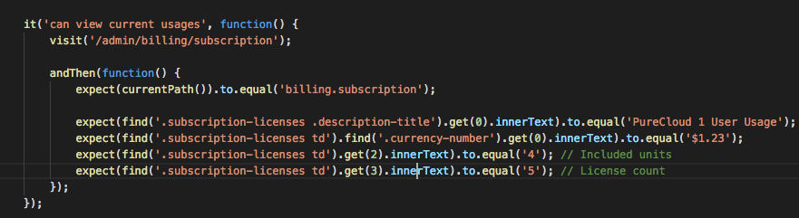
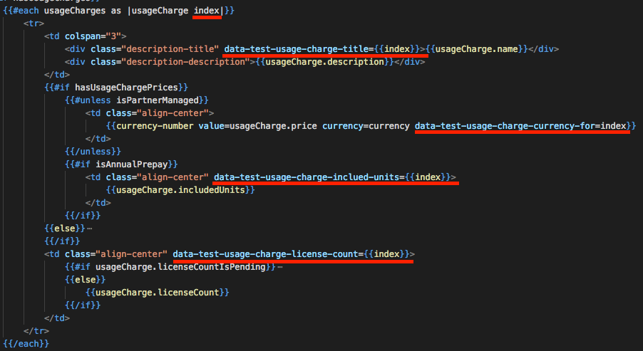
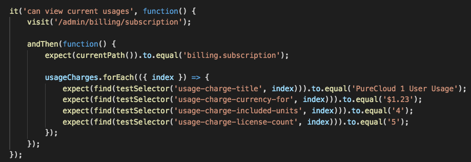
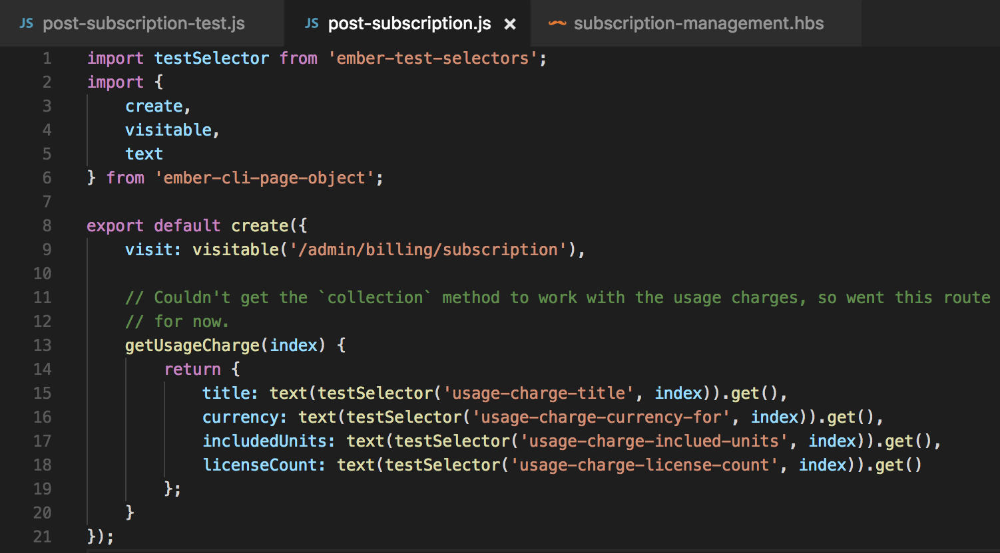
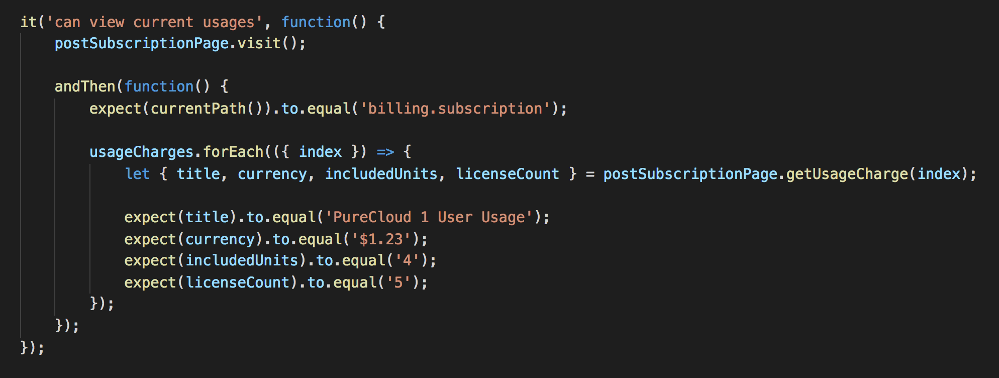

Popular Ember Testing Topics
- ember-test-selectors
- ember-cli-page-object
Increase robustness of your test suite
ember-test-selectors
The Problem
Using CSS selectors in tests
- Selecting elements via CSS can be brittle. We are selecting elements based on something that could change.
- The purpose of CSS classes are styling, not testing.
Solution:ember-test-selectors
Tell me more...
- Use HTML5 data attributes for your elements
- Provides a testSelector function - you provide a data attribute and it returns the element
- Strips out the attributes on production builds (can override via the build file)
- Does some heavy lifting for data attributes and components for you, just pass a data test attribute and you're done
Example:
This test looks at a collection of usage charges and asserts
Template Changes:
Re-written Test:
0 dependencies on CSS classes!
Summary
- Less brittle tests, since they are no longer dependent on CSS classes
- Can be used with integration or acceptance tests
- Really easy to implement
- Great docs and resources online
ember-cli-page-object
Summary
"The main idea behind this pattern is to encapsulate in an object the page or component structure being tested, hiding the details of its HTML structure and exposing only the semantic structure of the page."
Create an object that represents your page/component and expose props/methods to interact with it.
Automation Testing
- Our automation tests follow this pattern, because it allows for a clean interface with your pages
- When adding new functionality, you add it to your page object and expose methods of interacting with the element(s)
- Keeps your test files really clean and specific to tests versus test setup or interacting with multiple elements for an expected result
Example Page Object
Example of Test
Summary
- Create objects that model your pages and expose ways of interacting with your UI
- Helps increase robustness of tests, so you only have to make changes in one spot to particular flows
- Plays nice with ember-test-selectors (so far... although I ran out of time getting the 'collection' to work)
Resources
-
Medium post on all of the above
- ember-cli-mirage
- ember-test-selectors
- ember-cli-page-object
- async/await
- EmberMap ember-test-selectors
- Testing abstraction
- Acceptance testing